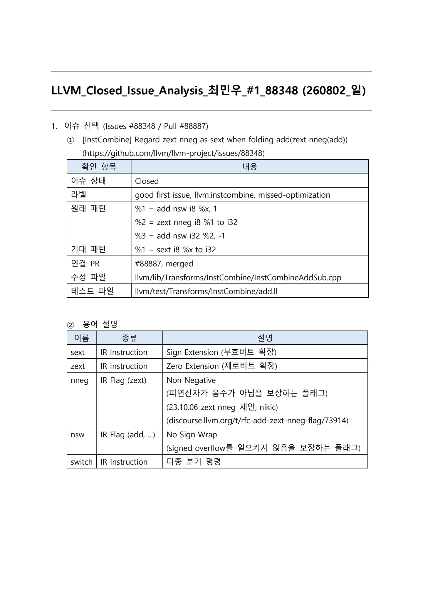
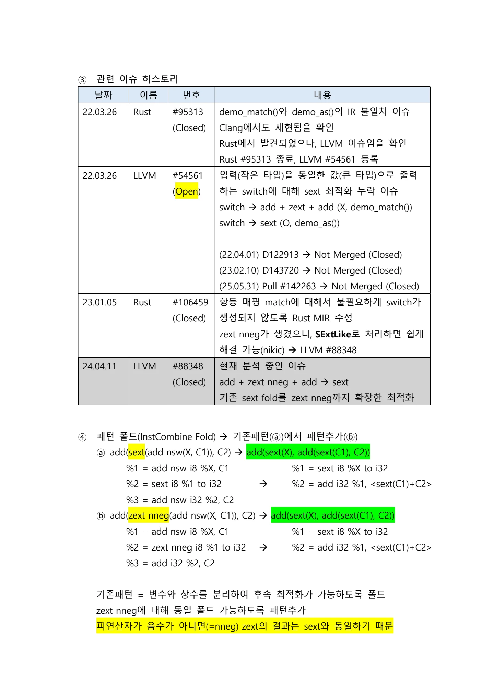
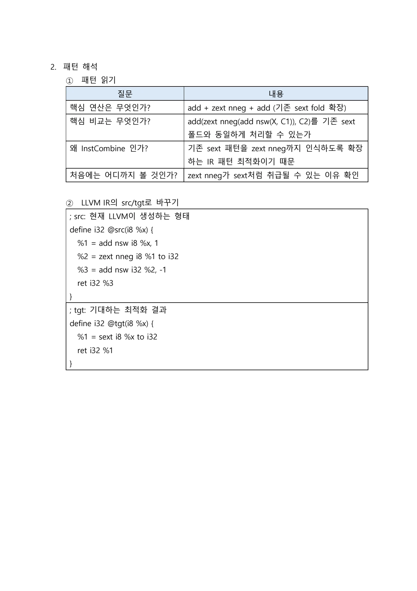
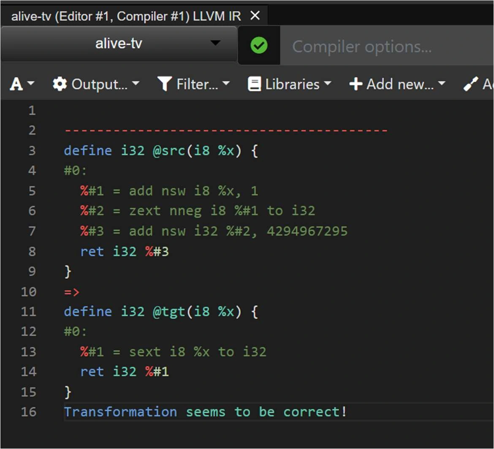
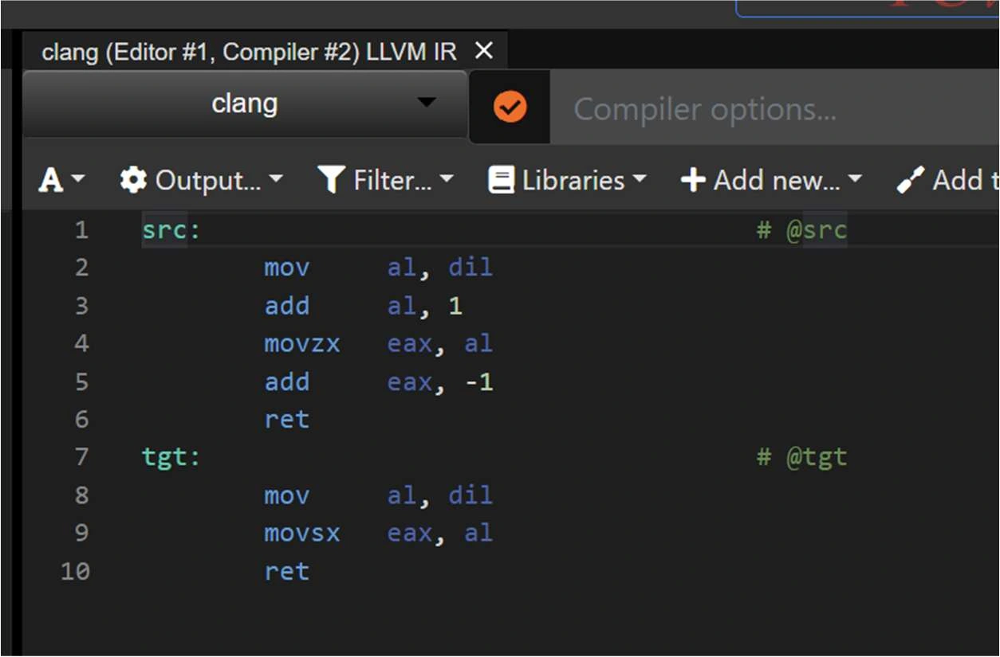
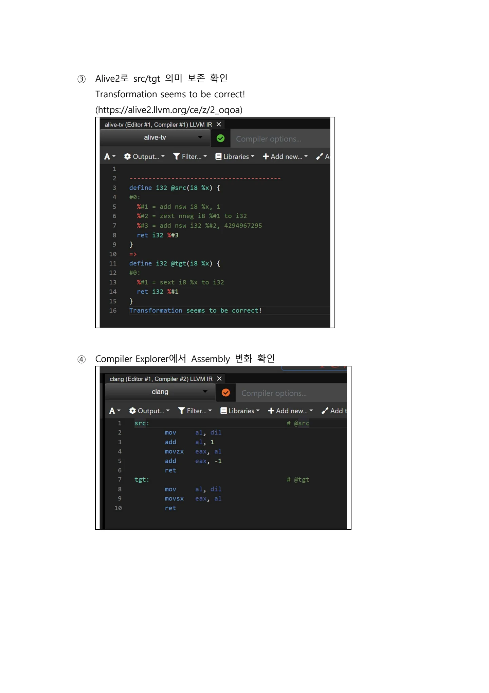
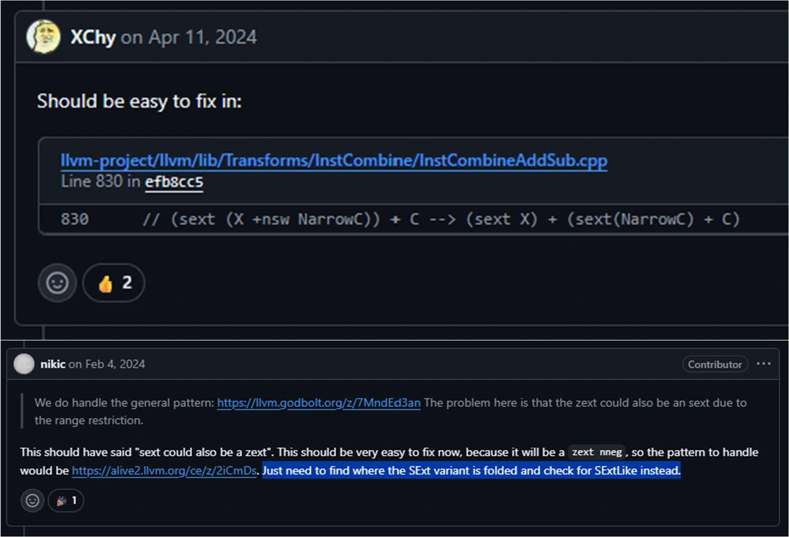
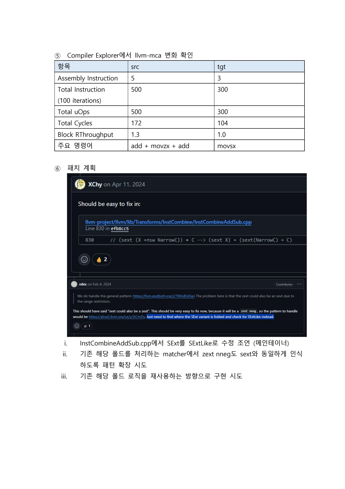
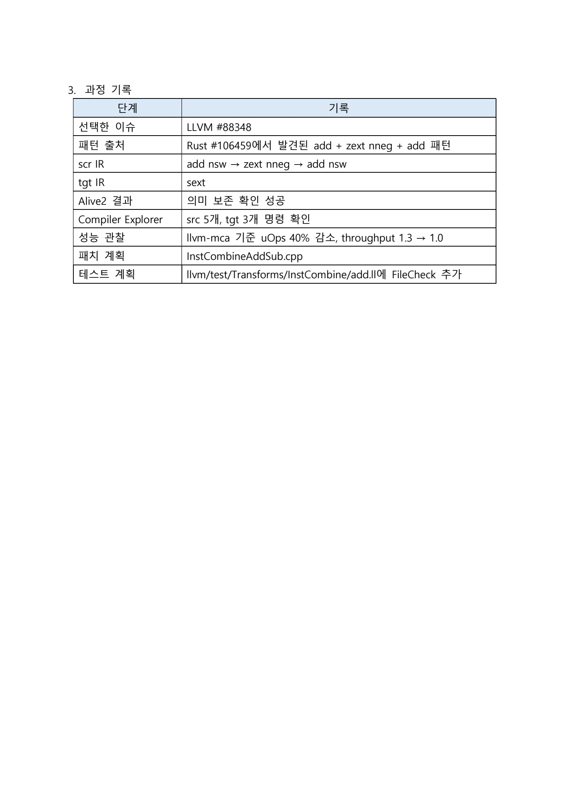

zext nneg를 기존 sext fold에 연결하기
음수가 아니라는 조건을 사용해 add·확장·add를 더 단순한 부호 확장으로 접는다.
LLVM_Closed_Issue_Analysis__1_88348_v1.1.pdf의 전체 내용입니다. 설명·코드·표·검증 기록을 생략하지 않고 옮겼습니다. 그림 안의 문자 인식 결과에는 기호 오류가 있을 수 있어 이미지도 함께 제공합니다.
이 문서의 목차
LLVM_Closed_Issue_Analysis_최민우_#1_88348 (260802_일) / 1. 이슈 선택 (Issues #88348 / Pull #88887) / ① [InstCombine]
LLVM_Closed_Issue_Analysis_최민우_#1_88348 (260802_일)
1. 이슈 선택 (Issues #88348 / Pull #88887)
① [InstCombine] Regard zext nneg as sext when folding add(zext nneg(add))
(https://github.com/llvm/llvm-project/issues/88348)
확인 항목 | 내용 |
|---|---|
이슈 상태 | Closed |
라벨 | good first issue, llvm:instcombine, missed-optimization |
원래 패턴 | |
기대 패턴 | |
연결 PR | #88887, merged |
수정 파일 | llvm/lib/Transforms/InstCombine/InstCombineAddSub.cpp |
테스트 파일 | llvm/test/Transforms/InstCombine/add.ll |
② 용어 설명
이름 | 종류 | 설명 |
|---|---|---|
sext | IR Instruction | Sign Extension (부호비트 확장) |
zext | IR Instruction | Zero Extension (제로비트 확장) |
nneg | IR Flag (zext) | Non Negative (피연산자가 음수가 아님을 보장하는 플래그) (23.10.06 zext nneg 제안, nikic) (discourse.llvm.org/t/rfc-add-zext-nneg-flag/73914) |
nsw | IR Flag (add, ...) | No Sign Wrap (signed overflow를 일으키지 않음을 보장하는 플래그) |
switch | IR Instruction | 다중 분기 명령 |
페이지 배치·기호·도식 확인하기


③ 관련 이슈 히스토리 / 날짜 이름 번호 내용 / 22.03.26 Rust #95313 demo_match()와 demo_as()의 IR 불일치 이슈
③ 관련 이슈 히스토리
날짜 | 이름 | 번호 | 내용 |
|---|---|---|---|
22.03.26 | Rust | #95313 (Closed) | demo_match()와 demo_as()의 IR 불일치 이슈 Clang에서도 재현됨을 확인 Rust에서 발견되었으나, LLVM 이슈임을 확인 Rust #95313 종료, LLVM #54561 등록 |
22.03.26 | LLVM | #54561 (Open) | 입력(작은 타입)을 동일한 값(큰 타입)으로 출력 하는 switch에 대해 sext 최적화 누락 이슈 switch add + zext + add (X, demo_match()) switch sext (O, demo_as()) (22.04.01) D122913 Not Merged (Closed) (23.02.10) D143720 Not Merged (Closed) (25.05.31) Pull #142263 Not Merged (Closed) |
23.01.05 | Rust | #106459 (Closed) | 항등 매핑 match에 대해서 불필요하게 switch가 생성되지 않도록 Rust MIR 수정 zext nneg가 생겼으니, SExtLike로 처리하면 쉽게 해결 가능(nikic) LLVM #88348 |
24.04.11 | LLVM | #88348 (Closed) | 현재 분석 중인 이슈 add + zext nneg + add sext 기존 sext fold를 zext nneg까지 확장한 최적화 |
④ 패턴 폴드(InstCombine Fold) 기존패턴(ⓐ)에서 패턴추가(ⓑ)
ⓐ add(sext(add nsw(X, C1)), C2) add(sext(X), add(sext(C1), C2))
%1 = add nsw i8 %X, C1%2 = sext i8 %1 to i32%1 = sext i8 %X to i32 %2 = add i32 %1, <sext(C1)+C2>
%3 = add nsw i32 %2, C2ⓑ add(zext nneg(add nsw(X, C1)), C2) add(sext(X), add(sext(C1), C2))
%1 = add nsw i8 %X, C1%2 = zext nneg i8 %1 to i32 %3 = add i32 %2, C2%1 = sext i8 %X to i32%2 = add i32 %1, <sext(C1)+C2>기존패턴 = 변수와 상수를 분리하여 후속 최적화가 가능하도록 폴드
zext nneg에 대해 동일 폴드 가능하도록 패턴추가
피연산자가 음수가 아니면(=nneg) zext의 결과는 sext와 동일하기 때문
페이지 배치·기호·도식 확인하기


2. 패턴 해석 / ① 패턴 읽기 / 질문 내용
2. 패턴 해석
① 패턴 읽기
질문 | 내용 |
|---|---|
핵심 연산은 무엇인가? | add + zext nneg + add (기존 sext fold 확장) |
핵심 비교는 무엇인가? | add(zext nneg(add nsw(X, C1)), C2)를 기존 sext 폴드와 동일하게 처리할 수 있는가 |
왜 InstCombine 인가? | 기존 sext 패턴을 zext nneg까지 인식하도록 확장 하는 IR 패턴 최적화이기 때문 |
처음에는 어디까지 볼 것인가? | zext nneg가 sext처럼 취급될 수 있는 이유 확인 |
② LLVM IR의 src/tgt로 바꾸기
; src: 현재 LLVM이 생성하는 형태
define i32 @src(i8 %x) {%1 = add nsw i8 %x, 1%2 = zext nneg i8 %1 to i32%3 = add nsw i32 %2, -1ret i32 %3}
; tgt: 기대하는 최적화 결과
define i32 @tgt(i8 %x) {%1 = sext i8 %x to i32ret i32 %1}
페이지 배치·기호·도식 확인하기


③ Alive2로 src/tgt 의미 보존 확인 / Transformation seems to be correct! / (https://alive2.llvm.org/ce/z/2_oqoa)
③ Alive2로 src/tgt 의미 보존 확인
Transformation seems to be correct!
(https://alive2.llvm.org/ce/z/2_oqoa)
④ Compiler Explorer에서 Assembly 변화 확인


그림 안의 텍스트 · 문자 인식
alive-tv (Editor #1, Compiler #1) LLVM IR X allive-tv Compiler options... A~ 후 Output...™ = Libraries * + Add new...- / A I Filter..." ---------~----- define 132 asrc(i8 %x) t 4 #0: %#1 = add nsw i8 %x, 1 %#2 = Zext nneg 18 %#1 to 132 7 %#3 = add nsw 132 %#2, 4294967295 8 ret 132 %#3 } 10 => 11 define i32 @tgt(18 %x) t 12 #0: 13 %#1 = sext i8 %x to 132 14 ret 132 %#1 15 } Transformation seems to be correct! 16
이미지에서 읽은 문자입니다. 코드 기호는 그림에서 확인하세요.


그림 안의 텍스트 · 문자 인식
clang (Editor #1, Compiler #2) LLVM IR X Clang Compiler options... A~ 후 Output...~ T Filter... - E Libraries - + Add new... / Add t Src: # @src al, d1그 2 moV 3 add al, 1 4 mOVZX eaX, a1 5 add eax, -1 ret tgt: # @tgt al, dil mov al mOVSX eax, 10 ret
이미지에서 읽은 문자입니다. 코드 기호는 그림에서 확인하세요.
페이지 배치·기호·도식 확인하기


⑤ Compiler Explorer에서 llvm-mca 변화 확인 / 항목 src tgt / Assembly Instruction 5 3
⑤ Compiler Explorer에서 llvm-mca 변화 확인
항목 | src | tgt |
|---|---|---|
Assembly Instruction | 5 | 3 |
Total Instruction (100 iterations) | 500 | 300 |
Total uOps | 500 | 300 |
Total Cycles | 172 | 104 |
Block RThroughput | 1.3 | 1.0 |
주요 명령어 | add + movzx + add | movsx |
⑥ 패치 계획
i. ii.
iii.
InstCombineAddSub.cpp에서 SExt를 SExtLike로 수정 조언 (메인테이너)
기존 해당 폴드를 처리하는 matcher에서 zext nneg도 sext와 동일하게 인식
하도록 패턴 확장 시도
기존 해당 폴드 로직을 재사용하는 방향으로 구현 시도


그림 안의 텍스트 · 문자 인식
XChy on Apr 11, 2024 Should be easy to fix in: livm-project/livm/lib/Transforms/InstCombine/InstCombineAddSub.cpp Line 830 in efbaccs 830 // (sext (X +nsw NarrowC)) + C--> (sext X) + (sext(NarrowC) + C) nikic on Feb 4, 2024 Contributor)• We do handle the general pattern: https://llvm.godbolt.org/z/7MndEd3an The problem here is that the zext could also be an sext due to the range restriction. This should have said "sext could also be a zext". This should be very easy to fix now, because it will be a zext nneg, so the pattern to handle would be https://alive2.livm.org/ce/z/2iCmDs. Just need to find where the SExt variant is folded and check for SExtlike instead. % 1
이미지에서 읽은 문자입니다. 코드 기호는 그림에서 확인하세요.
페이지 배치·기호·도식 확인하기


3. 과정 기록 / 단계 기록 / 선택한 이슈 LLVM #88348
3. 과정 기록
단계 | 기록 |
|---|---|
선택한 이슈 | LLVM #88348 |
패턴 출처 | Rust #106459에서 발견된 add + zext nneg + add 패턴 |
scr IR | add nsw → zext nneg → add nsw |
tgt IR | sext |
Alive2 결과 | 의미 보존 확인 성공 |
Compiler Explorer | src 5개, tgt 3개 명령 확인 |
성능 관찰 | llvm-mca 기준 uOps 40% 감소, throughput 1.3 → 1.0 |
패치 계획 | InstCombineAddSub.cpp |
테스트 계획 | llvm/test/Transforms/InstCombine/add.ll에 FileCheck 추가 |
페이지 배치·기호·도식 확인하기


핵심 원리와 편집 주석
대상 식
; Before
%a = add nsw i8 %x, 1
%b = zext nneg i8 %a to i32
%r = add nsw i32 %b, -1
; After
%r = sext i8 %x to i32zext의 입력이 음수가 아니면 같은 입력의 sext와 결과가 같다. 이 사실을 이용해 기존 sext 기반 fold를 재사용한다.
플래그와 기존 규칙
nneg는 단순한 힌트가 아니다. 전제를 위반한 입력은 poison이 될 수 있다. 내부 덧셈의 nsw와 확장 전후의 비트 폭도 변환 조건에 포함된다.
자료는 SExt만 찾던 matcher를 SExtLike로 넓히는 방향을 설명한다. 별도 식을 추가하기보다 같은 성질을 가진 입력을 기존 규칙에 연결한다.
문제의 출처와 학습 과정
원래 현상은 Rust의 match와 cast가 다른 IR로 내려가는 사례와 연결되어 있었다. 언어별 소스가 달라도 결함은 공통 LLVM 최적화에 있을 수 있다.
- Rust와 LLVM 이슈의 연결을 확인한다.
- 최소 src·tgt IR을 만든다.
- Alive2로 의미를 확인한다.
- Compiler Explorer에서 기계어를 비교한다.
- 기존 패치의 matcher와 테스트를 예상안과 대조한다.
보고된 기계어 관찰
| 항목 | src | tgt |
|---|---|---|
| 예제 기계어 명령어 | 5 | 3 |
| 100회 llvm-mca 명령어 | 500 | 300 |
| Block RThroughput | 1.3 | 1.0 |
문서 전문과 버전
- PDFPDF 원자료 · 6쪽LLVM_Closed_Issue_Analysis__1_88348_v1.1.pdf
각 자료는 별도의 버전입니다. 같은 주제라도 구현 상태·설명 범위·수치가 다를 수 있습니다.
관련 이슈와 PR
구현·병합 상태와 측정값은 해당 제출 자료의 작성 시점 기준입니다.